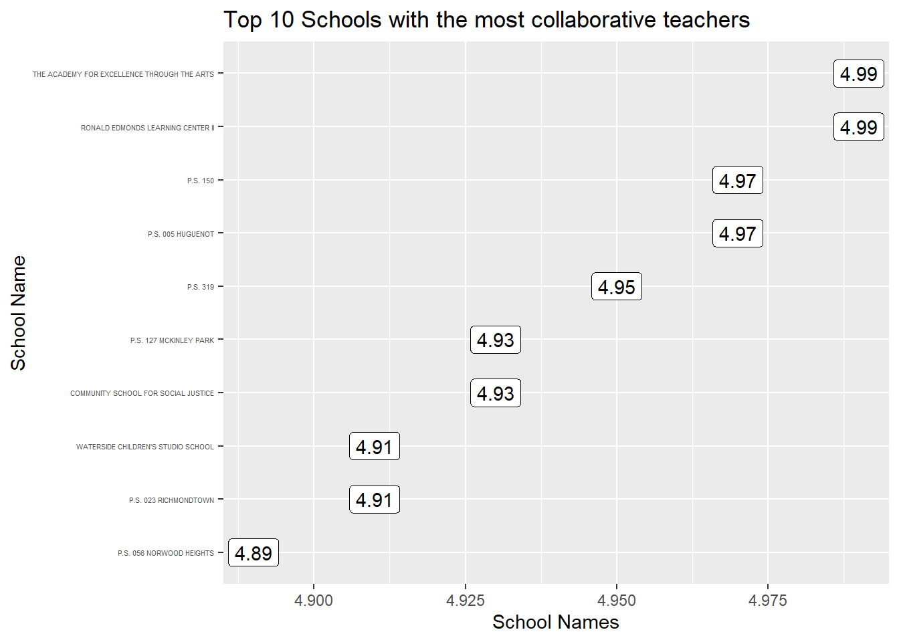
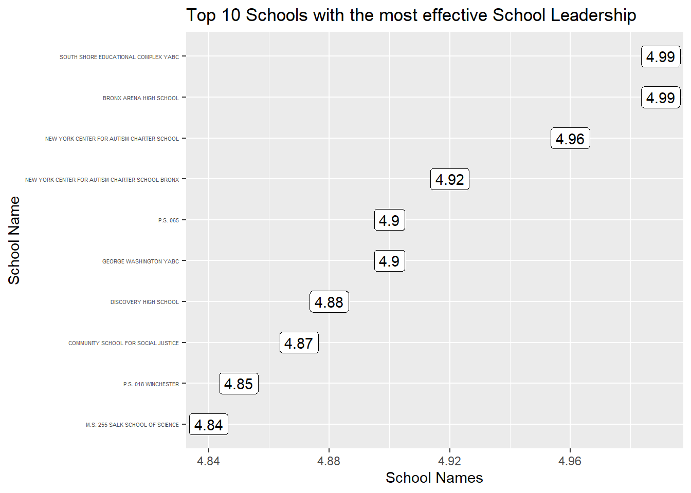
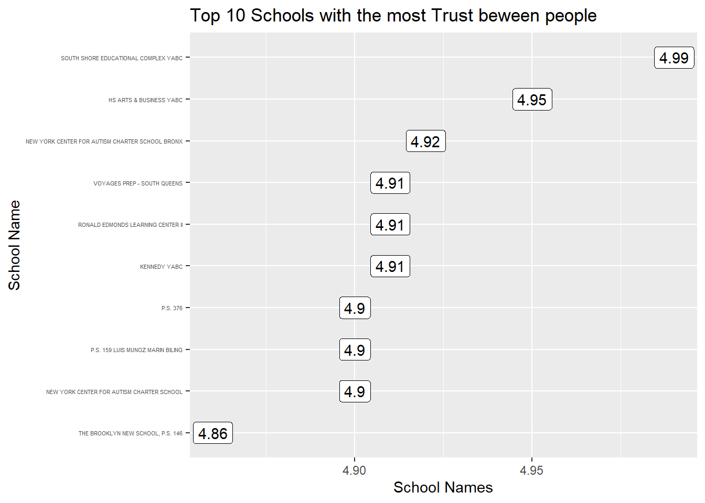
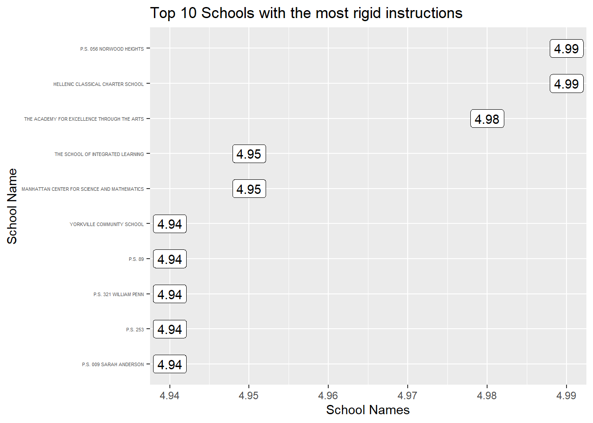

Chapter 5 Results
5.1 Distribution of School Scores
Before we make any comparison between NYC schools, we firstly have a look at the distribution of our dataset, i.e. the distribution of school scores from students’, teachers’ and parents’ perspective. In order to do that, we make density plots of the scores faceted by these five components.(we drop supportive environment score because we know from chapter 4 that it has nearly 100% missing values)
 We know from the plot that the distribution of school scores in these five aspects are not normally distributed, in fact, they are left-skewed, with long-tail data distributing in the left side of the plot.
We know from the plot that the distribution of school scores in these five aspects are not normally distributed, in fact, they are left-skewed, with long-tail data distributing in the left side of the plot.
5.2 Top 10 performance schools
5.2.1 Top 10 schools in five aspects
Firstly, we sort the schools according to the five aforementioned aspects. In this way, we made a leaderboard for Top 10 Schools with the most collaborative teachers, Top 10 Schools with the most effective School Leadership, Top 10 Schools with the most Trust beween people, Top 10 Schools with the most rigid instructions, and Top 10 Schools with the Strongest Family Community Ties
   

5.2.2 Top 10 Schools with the highest comprehensive scores
Sometimes it is necessary to evaluate the schools in a more comprehensive way. Therefore, we take all the five aspects into consideration and calculate a comprehensive school performance score by taking the average of all the scores in five aspects. Then we made a leaderboard of the “Best” 10 Schools in NYC.

The best 10 schools in NYC are:
## [1] "COMMUNITY SCHOOL FOR SOCIAL JUSTICE" "P.S. 321 WILLIAM PENN"
## [3] "THE BROOKLYN NEW SCHOOL, P.S. 146" "KENNEDY YABC"
## [5] "HELLENIC CLASSICAL CHARTER SCHOOL" "P.S. 253"
## [7] "P.S. 041 CROCHERON" "HS ARTS & BUSINESS YABC"
## [9] "P.S. 065" "P.S. 112 LEFFERTS PARK"5.3 Dependency Relationships analysis
Apart from the scores derived from the result given by Department of Education of NYC, we also evaluate the performance of each school from the perspective of students, teachers and parents according to their answers to the questionnaire directly. In this section, we are going to look at the relationship of school scores given from different perspectives.
5.3.1 Do Teachers and Parents feel the same about Family-Community bond?
Both teachers and parents have answered some questions about their feelings about the family-community bond in their schools. For example, in the questionnaire for teachers, there are several statements like “teachers understand families’ problems and concerns.”; in the questionnaire for parents, there are statements like “School staff regularly communicate with me about how I can help my child learn.”. Parents and teachers are asked to give the degree in which they agree to such statements, such as “strongly agree”,“agree”,“disagree”,“strongly disagree”,“idk”. In this way, we are able to analysis whether teachers and parents feel the same about the family-community bond in their schools.
In order to make our analysis easier, we firstly derive a family-community bond score for each school from parents’ and teachers’ point of view respectively. More specifically, we calculate the percentage of strongly agree,agree,disagree,strongly disagree,idk, and add +2 points for strongly agree, +1 point for agree, -1 point for disagree, -2 points for strongly disagree and +0 point for idk.
The scores given by teachers and parents are clearly positively correlated:
 The correlation coefficient is:
The correlation coefficient is:
## [1] 0.48121625.3.2 Do teachers and students feel the same about student inclusion?
Teachers and students have answered some questions about their feelings towards the student inclusion in their schools from their own perspectives. In this way, we are able to analysis whether teachers and students feel the same about student inclusion.
In order to make our analysis easier, we firstly calculate a student inclusion score for each school from students’ and teachers’ point of view respectively, using the formula mentioned in 5.3.1.
The scores given by students and teachers are also positively correlated:
The correlation coefficient is:
## [1] 0.413764